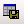
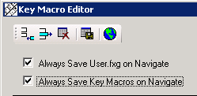

The Key Macro Editor
The Key Macro Editor gives DeltaV Operate users an easy way to create and manipulate key macros in DeltaV Operate. This section describes the Key Macro Editor interface and its basic functionality.
Starting the Key Macro Editor
You must have DeltaV Operate running before you start the Key Macro Editor. You can start the Key Macro Editor from DeltaV Operate by clicking the Key Macro button on the DeltaV Utilities toolbar in configure mode.
You can also start the Key Macro Editor by selecting Add or Edit from the Key Macros option in the right-click menu. You access the right-click menu after selecting an object, picture, or user global page. You can select an object or picture from the system tree or drawing area. You can select the user global page from the system tree.
The Key Macro Editor window appears as follows:
Initially, the Key Macros Apply To field displays the object, picture, or user global page that was selected when you opened the Key Macro Editor.
Column Definitions for the Key Macro Editor
The following table describes the columns of the Key Macro Editor spreadsheet and the information that you can enter into them.
You can only access these columns when a row is active. Click a row to make it active.
|
Key Combination |
Define the key assignment for the macro. The key combination can include one key or a combination of keys. For example: F1, Ctrl+A, or Ctrl+Shift+H are all possible key macros. |
|
Action |
Define the expert that you want to run for the key macro. The expert automatically launches after you select it from the drop-down list. An expert consists of a dialog box that requires minimum input to quickly create a script to perform a task. For example, the OpenPicture expert requires you to enter the picture name that you want to open in the dialog box. If you select Custom, the Microsoft Visual Basic Editor opens so you can enter a custom script. |
|
Run Expert |
Re-run the expert defined in the Action cell. You can re-run the expert to modify the expert's parameters. For example, you can use the Run Expert button to change the name of the picture that is opened with the OpenPicture expert. You do not need to know Visual Basic to run an expert. |
|
VB Editor |
Access the Microsoft Visual Basic Editor so that you can view or modify the VBA script behind the key macro. Note:
It is highly recommended that you do not modify the code that an expert created because the format of those comments and code written by the expert is used when re-running the expert. |
|
Description |
Enter text that describe the function of the key macro. Can contain up to 60 alphanumeric characters, including special characters, such as -(*)&+% and spaces. The Description field is optional. |
The Key Macro Editor Toolbar
Many of the commands found on the menu bar have corresponding toolbar buttons. The following table describes the functions of the Key Macro Editor-specific toolbar buttons.
|
Add a row to the spreadsheet. |
|
|
Delete the active row. |
|
|
Delete all rows. |
|
|
 |
Export the key macros. The exported .CSV file is intended to be used for cross-referencing key macros in Excel. |
|
Opens User.fxg (the global user file). The word User appears in the Key Macros Apply To: field. |
User Preferences for the Key Macro Editor
You can define the following automatic saving features for the Key Macro Editor:

Always Save User.fxg on Navigate – Every time you make changes to the user global page and then navigate to a picture or object, you save the changes without being prompted. The User.fxg file contains your system wide key macros. If you do not save the User.fxg file on navigation, global key macros will not be saved to disk until you shut down DeltaV Operate. You are prompted to save the User.fxg during the shutdown.
Always Save Key Macros on Navigate – Every time you browse to another shape, picture, or the user global page, you save the key macros that are configured without being prompted. This preference does not save the picture, however. The Always Save Key Macros on Navigate option is a good development tool, if you want to safely design key macros and do not want to modify your pictures until you close the picture or DeltaV Operate.
You can have both of these preferences enabled at the same time. With both selected, you will not see a prompt asking you to save either the User.fxg file or the key macros since both will be saved automatically.
These preferences do not automatically save the picture file. You can save the picture file (.GRF file) yourself at any time, or when prompted when you close the picture or DeltaV Operate.